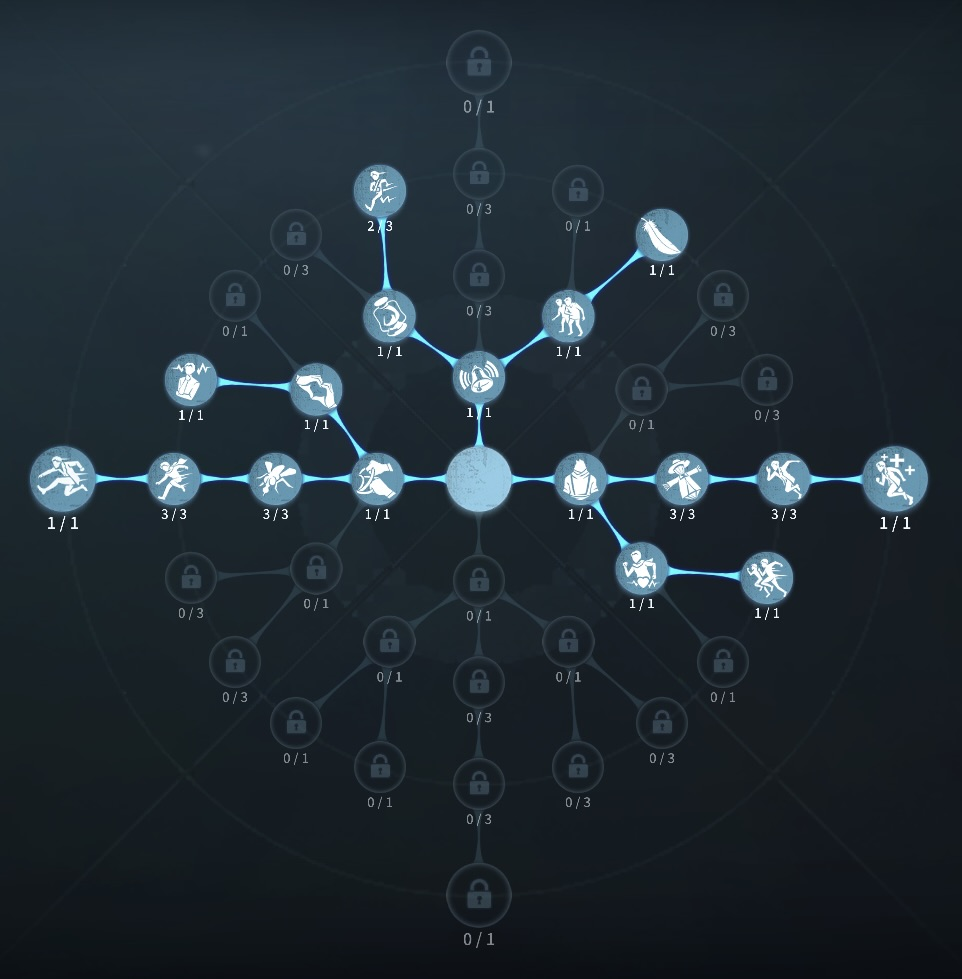
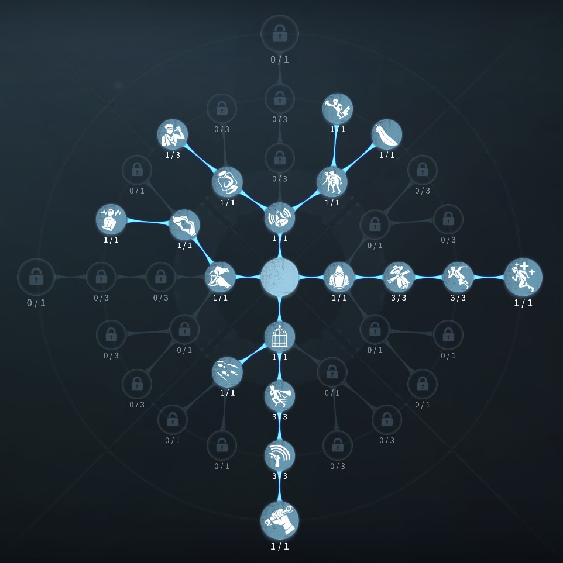

冒険家の評価
隠密に最大の可能性が秘められた
外在特質と特徴
特質1:探検の空想
・冒険家はガリヴァー旅行記を持ており、レーダーに映らない小人状態になる（耳鳴りの対象にはなる）。しかし、小人状態では移動速度が10%減少し、解読・治療・救助・ロッカー・アイテム箱・板窓などの操作を行えない。・冒険家はガリヴァー旅行記を使用しても耐久度を消費しなくなる。
・小人状態では60m以内のハンターとの距離と方向、宝の位置がわかる。
・宝を掘ると掘った分だけ暗号機が回る暗号ページが手に入る。最大50％。
・暗号ページは最大で100％分まで所持することができる。危機一髪が発動中と携帯している暗号ページが100％に達してる間は発掘することができない。
・マップ上に同時に１個まで存在し3個まで手に入る。１/２/３つ目の宝を掘る時間は27/24/20秒。
・暗号ページを所持したサバイバーがロケットチェアに拘束さると所持している全ての暗号ページをその場に落とす。落ちている暗号ページは通過したサバイバーが自動で取得する。取得したサバイバーも暗号ページを使用することができる。
特質2:探検
・足跡が持続時間1秒減少・板・窓を乗り越えてもハンターに通知が発生しない
特質3:好奇心
・解読の調整発生率が30％上昇し、成功判定が30％減少する。特質4:実力蓄積
6秒間*1その場から移動せずに留まると、次の移動時に4秒間移動速度が25%上昇する。特徴
全サバイバーの中で隠密という言葉が こんなにも似合うサバイバーはいません。また宝の地図を使うことにより不意の通電ができたりと面白い一面もある。
宝の地図をもったまま椅子に吊られると宝の地図が椅子の横に落ちるため救助職が回収して活用することができるのも強い点
基本的な立ち回り方
1. 追われた時
本を使い、小人になりハンターの位置を確認し、ハンターがこっちに向かってくる場合100％といっていいほど、隠密してください。
隠密が失敗した際には、お陀仏でございます。
実力のみで戦ってください笑
2. 追われない時
宝の地図の場所を確認し、余りに遠い場合は宝の地図を無理やり取りに行くより、解読するほうが良いです。
危機一髪採用の時には救助も行おう！
おすすめの内在人格
膝蓋腱反射型人格
この内在人格は、雲中散歩で隠密を極め、冒険家は解読していない時間が多いため羽化効果で解読を早める

危機一髪型人格
この内在人格は、上記の内容とほぼ同じだが、共生効果を採用していることで救助面の強化を入れている


みんなのコメント